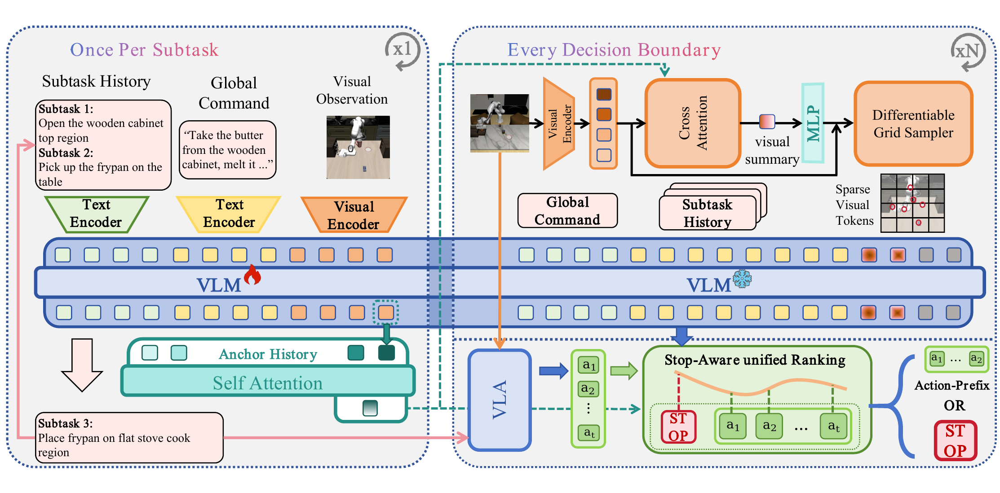
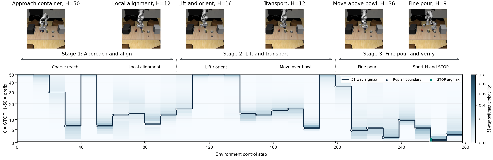
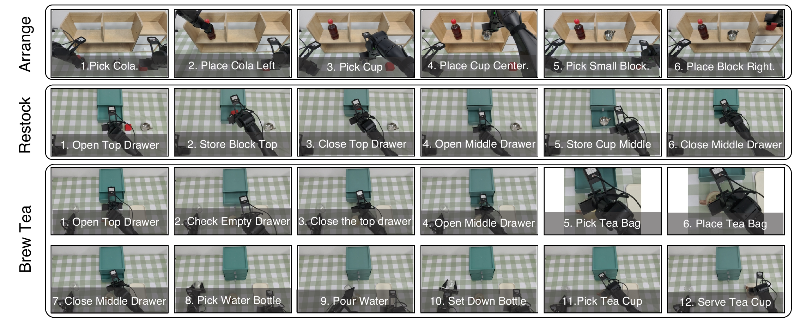

SparkVLA: Stop-Aware Hierarchical VLA with Adaptive Action Chunking for Long-Horizon Manipulation
Abstract
At every re-observation point in a hierarchical Vision-Language-Action (VLA) system, two interface decisions must be made: when to terminate the current subtask and how far to execute the proposed action chunk. These decisions are mutually dependent, yet existing architectures evaluate them in isolation. We present SparkVLA, a stop-aware hierarchical VLA that formulates both decisions as a single ranking: Stop competes against every action-prefix length in a unified candidate set, and the system selects the highest-scoring option. An Anchor-Conditioned Context Encoding module caches a history-aware subtask anchor encoding onset-state memory and goal semantics, guiding visual-token pruning toward task-relevant regions. A Stop-Aware Action-Prefix Selection head scores all candidates via full self-attention at chunk boundaries. SparkVLA achieves 47.12% success rate on RoboCerebra and 69.3% average success rate across three real-robot tasks.
Video
Overview

SparkVLA contains a high-level VLM planner and a low-level VLA executor. At the beginning of each subtask, the planner generates a natural-language subtask command from the global instruction, completed-subtask history, observations, and proprioceptive state. At each decision boundary, the executor proposes an action chunk conditioned on the current subtask command.
Method
Anchor-Conditioned Context Encoding
The planner extracts a raw anchor after autoregressive subtask generation and fuses it with the anchor history pool. The resulting history-aware anchor represents both the subtask-onset environment and the semantic goal. It conditions differentiable visual token selection, and the high-level backbone produces the current hidden feature used by the selector.
Stop-Aware Action-Prefix Selection
The unified candidate set contains Stop and all action-prefix lengths. A full-attention transformer jointly scores the candidates together with the subtask anchor and current high-level hidden feature. Selecting Stop completes the current subtask; selecting an action-prefix executes its actions before the next re-observation.

Results
RoboCerebra
| Method | Avg. | Dynamic Ran. | Dynamic Obs. | Memory Exp. | Memory Exe. | Mix | Ideal |
|---|---|---|---|---|---|---|---|
| OpenVLA-OFT | 1.68 | 3.95 | 0.00 | 0.84 | 0.96 | 1.04 | 3.95 |
| SmolVLA | 2.80 | 5.90 | 4.33 | 0.95 | 1.51 | 0.52 | 5.90 |
| π0.5 | 12.29 | 11.84 | 9.09 | 12.61 | 10.58 | 17.71 | 10.53 |
| HPE | 16.55 | 18.63 | 19.18 | 9.06 | 17.83 | 13.21 | 21.10 |
| Mem-0 | 20.29 | 18.42 | 18.42 | 25.21 | 18.27 | 19.81 | 19.74 |
| SparkVLA + OpenVLA-OFT | 24.15 | 18.22 | 20.99 | 28.56 | 26.63 | 27.54 | 18.22 |
| SparkVLA + SmolVLA | 25.32 | 18.22 | 19.07 | 30.68 | 30.26 | 27.54 | 19.88 |
| SparkVLA | 47.12 | 33.13 | 43.87 | 60.30 | 43.58 | 48.52 | 46.38 |
Success rate (%). Avg. is the micro-average across all RoboCerebra conditions.
LIBERO
SparkVLA achieves 98.5% average success rate and 98.0% success rate on LIBERO-Long.
Inference Efficiency
SparkVLA runs at 4.14 Hz, corresponding to 41.4 action steps/s, compared with 4.68 Hz for the original π0.5. It retains 88% of the original policy throughput while supporting high-level planning and stop-aware adaptive action chunking.
Real-World
SparkVLA achieves 69.3% average success rate, compared with 48.0% for π0.5.
Real-World Experiments

Videos are shown at 4× speed.
BibTeX
@article{anonymous2027sparkvla,
title = {SparkVLA: Stop-Aware Hierarchical VLA with Adaptive Action Chunking for Long-Horizon Manipulation},
author = {Anonymous Authors},
year = {2027}
}